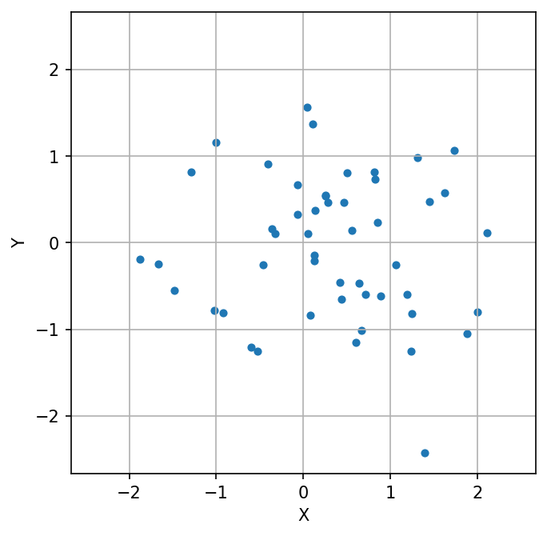
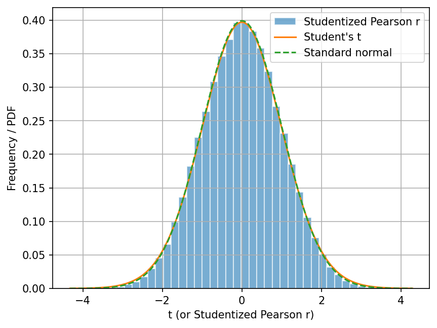
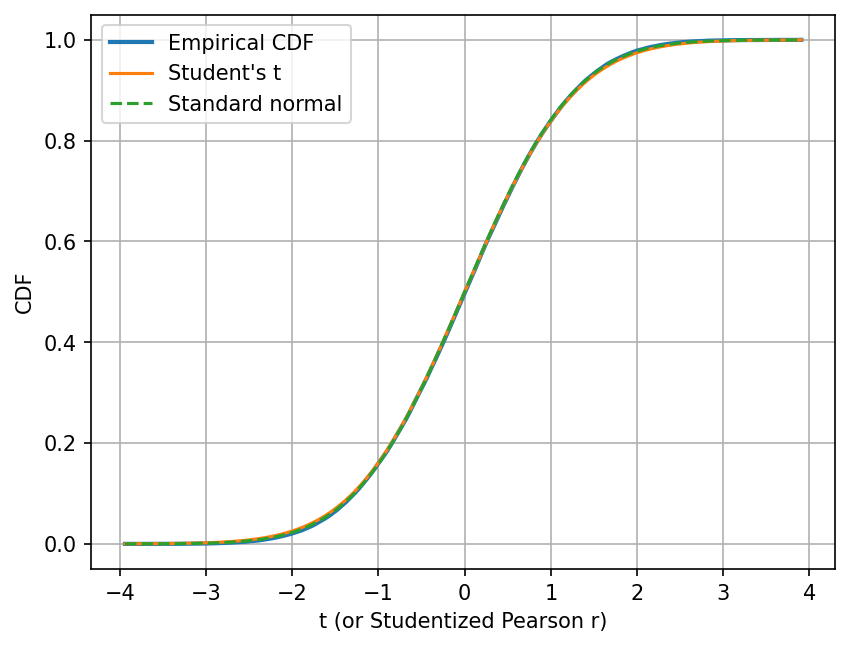
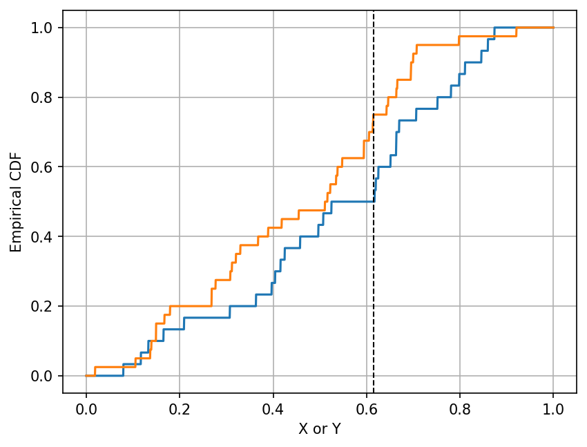
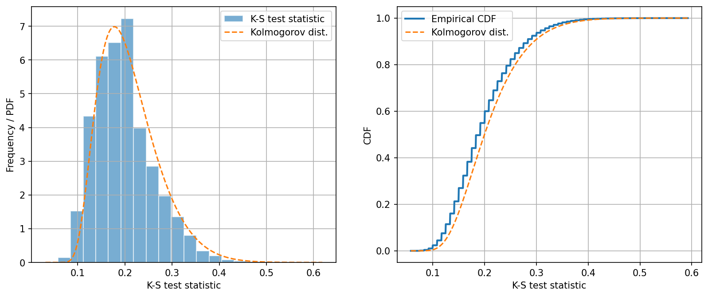

Lab 5: Statistical Tests#
For the class on Monday, January 27th
A. Pearson Correlation Coefficient#
Say we have a set of paired data \((x_1, y_1), (x_2, y_2), \cdots, (x_n, y_n)\). How do we test if \(x\)’s and \(y\)’s are correlated?
We can calculate the Pearson correlation coefficient \(r\) as follows:
where \(\bar{x}\) and \(\bar{y}\) are the sample averages of \(x\)’s and \(y\)’s, respectively.
However, the value of \(r\) does not directly tell us if the correlation is statistically significant. To test if the correlation is significant, we should ask the following question:
If \(x\)’s and \(y\)’s are not correlated, what is the probability of observing a correlation coefficient as extreme as the observed value of \(r\)?
To answer this question, we can generate many sets of uncorrelated paired data (“mock data”) and calculate the correlation coefficient for each set. Then, we can look at the distribution of the \(r\)’s from the mock data, and see where the observed \(r\) falls in that distribution.
Let’s start with generating those mock data set.
import numpy as np
import matplotlib.pyplot as plt
import scipy.stats
from tqdm.notebook import trange
n_samples = 50 # Number of pairs in one data set
n_mocks = 100000 # How many mock data sets we want to generate
rng = np.random.default_rng(208)
pearson_r = []
for _ in trange(n_mocks):
X = rng.normal(size=n_samples)
Y = rng.normal(size=n_samples)
cov = np.cov(X, Y) # sample covariance matrix
pearson_r_this = cov[1, 0] / np.sqrt(cov[0, 0] * cov[1, 1])
pearson_r.append(pearson_r_this)
pearson_r = np.array(pearson_r)
# Let's take a look of the very last set of the mock data we generated
fig, ax = plt.subplots(figsize=(5, 5), dpi=150)
ax.scatter(X, Y, s=15)
lim = np.max(np.abs([X, Y])) * 1.1
ax.set_xlim(-lim, lim)
ax.set_ylim(-lim, lim)
ax.set_xlabel('X')
ax.set_ylabel('Y')
ax.grid(True)

If you recall from what we did in Lab 0, the next step is to plot the histogram of \(r\)’s from these mock data sets, and then we can check where the observed \(r\) falls in that distribution.
However, it turns out that if \(x\)’s and \(y\)’s are independent and normally distributed, the distribution of the Pearson correlation coefficient is known! But we need to do a change of variable first. If we let
where \(n\) is the number of pairs, then \(t\) follows a Student’s t distribution with \(n-2\) degrees of freedom. This \(t\) is often called the studentized correlation coefficient.
Note that if \(x\)’s and \(y\)’s are not normally distributed, \(t\) would still follow a Student’s t-distribution if sample size is large enough.
Let’s now do this change of variable, and then plot the histogram of \(t\)’s (studentized_pearson_r).
This way, we can compare the histogram with the Student’s t distribution.
# Calculate t, or the studentized correlation coefficient
studentized_pearson_r = pearson_r * np.sqrt((n_samples - 2) / 1-pearson_r**2)
# Plot the histogram of the studentized correlation coefficient
fig, ax = plt.subplots(dpi=150)
ax.hist(studentized_pearson_r, bins=40, density=True, alpha=0.6, edgecolor="w", label="Studentized Pearson r")
ax.grid(True)
x = np.linspace(*ax.get_xlim(), num=1001)
ax.plot(x, scipy.stats.t.pdf(x, df=(n_samples-2)), label="Student's t")
ax.plot(x, scipy.stats.norm.pdf(x), ls="--", label="Standard normal")
ax.legend()
ax.set_xlabel("t (or Studentized Pearson r)");
ax.set_ylabel("Frequency / PDF");

You can see that the histogram of \(t\)’s (studentized_pearson_r) is very similar
to the Student’s t-distribution with \(n-2\) degrees of freedom.
In addition, as \(n \rightarrow \infty\), the Student’s t-distribution converges to the standard normal distribution. Even with \(n=50\), you can see that the Student’s t-distribution is already very close to the standard normal distribution.
Let’s also compare their cumulative distribution functions (CDFs).
For the Student’s t- and normal distributions, we merely need to change .pdf to .cdf in the code
to get their CDFs.
But for the histogram, we need to calculate its the empirical distribution function first,
which is defined as
where \(n\) is the total number of elements in the sample.
Note how this definition is analogous to the definition of the CDF.
The function get_empirical_cdf below calculates the empirical distribution function.
def get_empirical_cdf(samples, bins=1001):
samples = np.ravel(samples)
if isinstance(bins, int):
sample_min, sample_max = samples.min(), samples.max()
dx = (sample_max-sample_min) / (bins-1)
bins = np.linspace(sample_min-dx, sample_max+dx, num=bins)
else:
bins = np.asarray(bins)
return bins, np.searchsorted(samples, bins, side="right", sorter=samples.argsort()) / len(samples)
cdf_bins, empirical_cdf = get_empirical_cdf(studentized_pearson_r)
fig, ax = plt.subplots(dpi=150)
ax.plot(cdf_bins, empirical_cdf, lw=2, label="Empirical CDF")
ax.plot(cdf_bins, scipy.stats.t.cdf(cdf_bins, df=(n_samples-2)), label="Student's t")
ax.plot(cdf_bins, scipy.stats.norm.cdf(cdf_bins, scale=1), ls="--", label="Standard normal")
ax.grid(True)
ax.legend()
ax.set_xlabel("t (or Studentized Pearson r)");
ax.set_ylabel("CDF");

There are two reasons that we want to look at the CDFs. First, the comparison of the empirical and theoretical CDF is often a better comparison than the comparison of the histogram and the theoretical PDF, because the former is less sensitive to the choice of bin size.
Second, the CDF directly tells us the probability of observing a value less than \(t\). If I want to know the probability to observed a studentized Pearson r less than -2, I can simply read off the value of the CDF at \(t=-2\), which would be around 0.02 in this case.
Similarly, if I want to know the probability to observed a studentized Pearson r greater than 2, I can also read off the value of the CDF at \(t=2\), which would be around 0.98 in this case. One minus that value would be the probability I am looking for.
Now, let’s try an actual statistical test!
In the first cell below, we will generate our “observed” data set, X_obs and Y_obs.
🚀 Tasks:
In the second cell below, use
np.covto calculate the Pearson correlation coefficient betweenX_obsandY_obs. And then calculate studentized correlation coefficient using \( t = r \sqrt{\frac{n-2}{1-r^2}}\).In the third cell below, calculate the probability of observing a studentized Pearson r greater than the observed value. Do this calculation in three ways:
Using
studentized_pearson_rfrom the mock data, find the fraction of elements that are greater than or equal to the observed value.Use the CDF of the Student’s t-distribution with \(n-2\) degrees of freedom.
Use the CDF of the standard normal distribution.
# Don't change the content of this cell
rng = np.random.default_rng(218)
X_obs = rng.normal(size=n_samples)
Y_obs = rng.normal(size=n_samples)
# Use np.cov to calculate the Pearson correlation coefficient between X_obs and Y_obs
# Calculate the studentized Pearson correlation coefficient between X_obs and Y_obs
# Calculate the probability of observing a studentized Pearson r greater than the value you found above
## Using `studentized_pearson_r` from the mock data, find the fraction of elements that are greater than the observed value.
## You may find `np.count_nonzero` useful.
## Use the CDF of the Student's t-distribution with $n-2$ degrees of freedom.
## Use the CDF of the standard normal distribution.
These “probabilities” you found are often called \(p\)-values. They are unfortunately often misinterpreted. As you can tell from this exercise, the \(p\)-value is the probability of observing a value as extreme as (or more extreme than) the observed value when assuming the null hypothesis is true. It is, however, not the probability that the null hypothesis is true.
A small \(p\)-value only means that, if the null hypothesis is true, then the probability of observing the observed data (or summary statistics) is small.
We did this exercise to understand the concept of statistical tests and \(p\)-values. In practice, SciPy actually has a built-in functions for calculating the correlation coefficient and the associated \(p\)-value:
scipy.stats.pearsonr: Pearson correlation coefficientscipy.stats.spearmanr: Spearman’s rank correlation coefficient. This is the Pearson correlation coefficient of the rank-transformed data.
🚀 Tasks:
Use
scipy.stats.pearsonrto calculate the Pearson correlation coefficient and the associated \(p\)-value.
# Use `scipy.stats.pearsonr` to calculate the Pearson correlation coefficient and the associated $p$-value.
The process we have gone through also reveals the general framework behind statistical tests:
Formulate a null hypothesis.
Find a (good) test statistic.
Find the distribution of the test statistic under the null hypothesis (either analytically or numerically; may require additional assumptions).
Calculate the \(p\)-value for the observed test statistic. The p-value is the probability that the test statistic has a value as extreme as (or more extreme than) the observed value when assuming the null hypothesis is true.
For Part A of this lab, the null hypothesis is that \(x\)’s and \(y\)’s are uncorrelated, the test statistic is the studentized Pearson correlation coefficient, and the distribution of the test statistic under the null hypothesis is the Student’s t-distribution with \(n-2\) degrees of freedom (when \(x\) and \(y\) are normally distributed, or when sample is large).
We did a similar process in Lab 0. There, the null hypothesis is that the students choose their seats with no preference, the first test statistic we used is the maximum gap size between students, and the distribution of the test statistic under the null hypothesis is not known analytically, so we had to simulate the distribution.
📝 Questions:
As you complete the tasks above, is there anything particularly interesting or surprising that you observe? If so, note them here.
For the chi-squared test that you read from Reading 5, identify the null hypothesis, the test statistic, and the distribution of the test statistic under the null hypothesis (and any additional assumptions for obtaining the distribution).
// Add your answers here:
B. Kolmogorov–Smirnov Test#
Say you have two sets of samples, \((x_1, x_2, \cdots, x_m)\) and \((y_1, y_2, \cdots, y_n)\), and you want to test if they come from the same distribution or not.
If you don’t know the underlying distribution those samples come from, typically you would use the two-sample Kolmogorov–Smirnov test (K-S test) to test if the two data sets come from the same distribution.
The K-S test follows the same framework as in Part A. Here, the null hypothesis is that the two data sets come from the same distribution. The test statistic is the maximum difference between the two empirical distribution functions, which we will demonstrate below. The distribution of the test statistic under the null hypothesis can be calculated analytically.
One surprising fact about the K-S test is that the distribution of the test statistic under the null hypothesis does not depend on the underlying distribution of the data sets. This feature makes the K-S test very useful when the underlying distribution is unknown.
Let’s start by simulating the test statistic under the null hypothesis.
We will generate two sets of mock data, X and Y, for n_mocks times.
Note that X and Y are drawn from the same distribution but have different sample sizes.
Here we use the beta distribution as an example, but you can use any distribution you like.
The second cell below demonstrates how to calculate the test statistic for the observed data set.
The plot shows the empirical distribution functions of X and Y, and the test statistic is the
largest vertical difference between the two empirical distribution functions.
n_samples_x = 30
n_samples_y = 40
n_mocks = 100000
rng = np.random.default_rng(205)
ks_stats = []
for _ in trange(n_mocks):
X = rng.beta(a=2, b=2, size=n_samples_x)
Y = rng.beta(a=2, b=2, size=n_samples_y)
cdf_bins = np.linspace(0, 1, num=2001)
_, x_cdf = get_empirical_cdf(X, cdf_bins)
_, y_cdf = get_empirical_cdf(Y, cdf_bins)
cdf_diff = np.max(np.abs(x_cdf - y_cdf))
ks_stats.append(cdf_diff)
ks_stats = np.array(ks_stats)
# Let's plot the empirical distribution functions of X and Y for the last mock data set we generated
fig, ax = plt.subplots(dpi=150)
ax.plot(cdf_bins, x_cdf, label="X")
ax.plot(cdf_bins, y_cdf, label="Y")
ax.axvline(cdf_bins[np.argmax(np.abs(x_cdf - y_cdf))], color="k", ls="--", lw=1, label="KS statistic")
ax.grid(True)
ax.set_xlabel("X or Y");
ax.set_ylabel("Empirical CDF");
print("Value of the K-S test statistic =", np.max(np.abs(x_cdf - y_cdf)))
Value of the K-S test statistic = 0.25

Note that in the cell above, the printed value should be the same as the vertical difference between the blue and orange lines
at the location of the black dashed line. This value is the test statistic.
We have stored the value of this test statistic for each mock data set in the variable ks_stats.
Like in Part A, we can now plot the histogram of the test statistic under the null hypothesis (our mock data). The theoretical distribution of the K-S test statistic can be calculated analytically; however, it only has a closed form when the sample sizes \(n_x\) and \(n_y\) both approach infinity. This asymptotic distribution of the K-S test statistic is known as the Kolmogorov distribution.
In a two-sample K-S test, if the sample sizes are large, the test statistic follows the Kolmogorov distribution scaled by \(\sqrt{\frac{n_x n_y}{n_x + n_y}}\).
In a one-sample K-S test (same as two-sample K-S test but replacing one sample with a known distribution), the test statistic follows the Kolmogorov distribution scaled by \(\sqrt{n}\) if \(n\) is large.
fig, ax = plt.subplots(ncols=2, figsize=(13, 5), dpi=150)
ax[0].hist(ks_stats, bins=20, density=True, alpha=0.6, edgecolor="w", label="K-S test statistic")
ax[0].grid(True)
x = np.linspace(*ax[0].get_xlim(), num=1001)
scale_two_sample = np.sqrt(n_samples_x * n_samples_y / (n_samples_x + n_samples_y))
ax[0].plot(x, scipy.stats.kstwobign.pdf(x, scale=1/scale_two_sample), ls="--", label="Kolmogorov dist.")
ax[0].legend()
ax[0].set_xlabel("K-S test statistic");
ax[0].set_ylabel("Frequency / PDF");
cdf_bins, empirical_cdf = get_empirical_cdf(ks_stats)
ax[1].plot(cdf_bins, empirical_cdf, lw=2, label="Empirical CDF")
ax[1].plot(cdf_bins, scipy.stats.kstwobign.cdf(cdf_bins, scale=1/scale_two_sample), ls="--", label="Kolmogorov dist.")
ax[1].grid(True)
ax[1].legend()
ax[1].set_xlabel("K-S test statistic");
ax[1].set_ylabel("CDF");

There are things to note from these plots.
First, the difference between the histogram and the Kolmogorov distribution is very visible. This is expected as the Kolmogorov distribution is only a good approximation when the sample sizes are large.
Second, the CDF of the test statistic has steps. This means the test statistic is discretely valued. This is because the test statistic is the maximum difference between the two empirical distribution functions, which also have steps (because they are empirical). So the difference between them is also discrete.
Let us now calculate the \(p\)-value for one observed data set.
🚀 Tasks:
In the second cell below, calculate the K-S test statistic between
X_obsandY_obsusing their empirical CDFs. You can obtain the empirical CDF forX_obswithget_empirical_cdf(X_obs, cdf_bins). Once you obtain both empirical CDFs, calculate the maximum difference between them.In the third cell below, calculate the probability of observing a K-S test statistic greater than what you calculated for
X_obsandY_obsabove. Usingks_statsfrom the mock data, find the fraction of elements that are greater than or equal to the observed value.Finally, in the fourth cell, run
scipy.stats.kstest(X_obs, Y_obs).
# Don't change the content of this cell
rng = np.random.default_rng(218)
X_obs = rng.beta(a=2, b=2, size=n_samples_x)
Y_obs = rng.beta(a=2, b=2, size=n_samples_y)
# Calculate the K-S test statistic between X_obs and Y_obs using their empirical CDFs
# Calculate the probability of observing a K-S test statistic
# greater than what you calculated for `X_obs` and `Y_obs` above.
# Using `ks_stats` from the mock data, find the fraction of elements that are greater than the observed value.
# Use scipy.stats.kstest to calculate the K-S test statistic and the associated $p$-value.
📝 Questions:
Do
scipy.stats.kstest’s result, in particularstatisticandpvalue, agree with your own calculation? If there’s a discrepancy, what may be the reason for it?
// Add your answers here:
Tip
Submit your notebook
Follow these steps when you complete this lab and are ready to submit your work to Canvas:
Check that all your text answers, plots, and code are all properly displayed in this notebook.
Run the cell below.
Download the resulting HTML file
05.htmland then upload it to the corresponding assignment on Canvas.
!jupyter nbconvert --to html --embed-images 05.ipynb